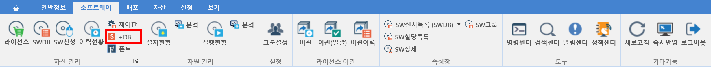

5-1-6. +DB
5-1-6. +DB
Source: https://www.sweeper.or.kr/etc/manual/5-1-6DB.html
5-1-6. +DB


한국 소프트웨어 저작권 협회(SPC)의 SAMDB에서 제공하는 소프트웨어 DB 정보를 이용하여, SW별 설치된 장비 수량을 확인할 수 있습니다.


-
라이선스 설정방법
-
SWDB와 같은 라이선스 설정은 아니며 단순 구매 수량만을 입력하여 대략적인 현황을 파악하는데 사용할 수 있습니다.
-
대상 SW를 선택한 뒤 마우스 우클릭하여 수량 수정 메뉴를 선택합니다.

- 수량을 입력한 뒤 확인 버튼을 클릭합니다.

참고사항
+DB를 이용하기 위해서는 별도로 구매가 필요합니다.
© Copyright SWeeper Inc.. All Rights Reserved